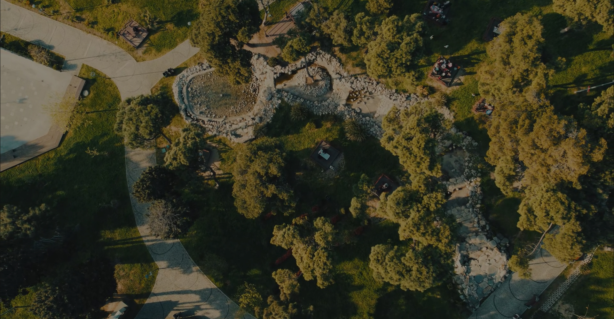

생명의 숲 forest for life
메뉴열기
소개
활동
참여와후원
자료실
검색열기
언어선택열기
마이페이지
팝업

2025 생명의숲 후원의 달
생명의 숲에서 만난 사람들
숲을 위한 나눔이야기
자세히보기
2022 울진산불 이후
사람의 손으로, 다시 숲이 되기까지
시간을 함께했습니다.
자세히보기
도시 속 나무심기
사람과 도시를 잇는
숨결이 되었습니다
자세히보기
고목나무 이야기
그 뿌리 아래에서
자연의 지혜를 배웁니다
자세히보기
102,302
그루
2024년 생명의 숲은 지구의 숨결을 되살리고
푸른내일을 만들기 위해 102,302그루의 나무을 심었습니다.
work0
work1
work2
work3
work4
work5
work6
work7
work8
news
footer